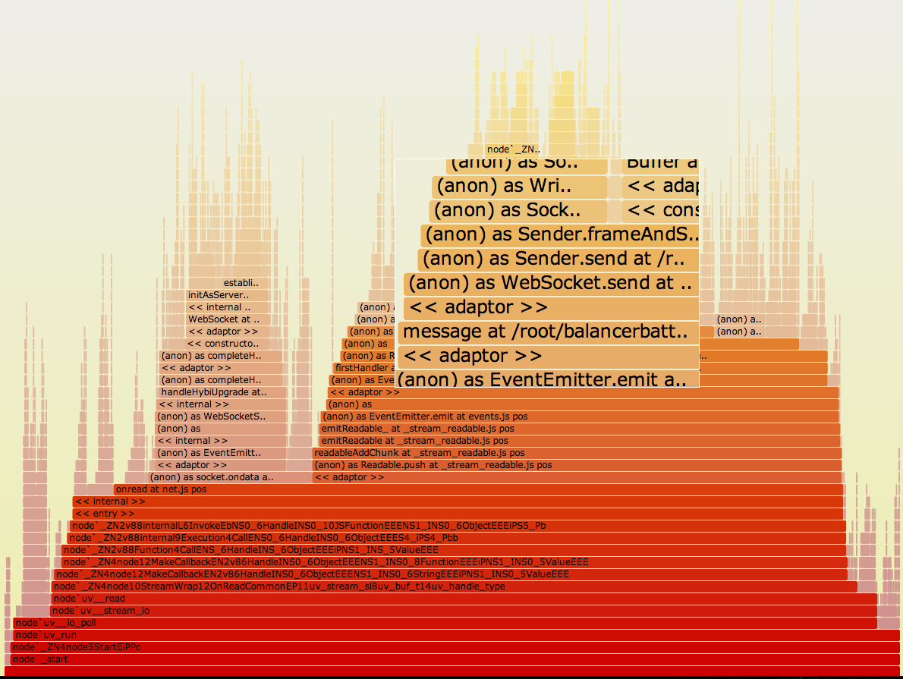

socket.io
whys and why nots
by Robert Oroszi (oroce)
DEMO: http://nbp.ngrok.com
Who am i?
@oroce
twitter github ten.izsoro@treborwhat is socket.io
what is socket.io
- websocket abstraction with fallback support
- client && server side library
- multiple transports
http vs websocket
 flickr
flickr
http vs websocket
flickr<coding>jump to </coding>
we are gonna use @gergelyke's nodeWHAT
.npm install socket.io --save
socket.io 0.9.X: https://github.com/LearnBoost/socket.io/tree/0.9
the original version
var http = require('http'),
express = require('express'),
fs = require('fs'),
app = express();
app.use(express.static(__dirname + '/static'));
app.get('/', function(req, res) {
res.send('nodeWHAT!?');
});
http.createServer(app).listen(3000, function (err) {
if (err) return console.log(err);
});
wire socket.io
var http = require('http'),
express = require('express'),
fs = require('fs'),
app = express(),
sio = require('socket.io');
app.use(express.static(__dirname + '/static'));
app.get('/', function(req, res) {
res.send('nodeWHAT!?');
});
var server = http.createServer(app);
var io = sio.listen(server);
server.listen(3000, function (err) {
if (err) return console.log(err);
});
@@ -1,7 +1,8 @@
var http = require('http'),
express = require('express'),
fs = require('fs'),
- app = express();
+ app = express(),
+ sio = require('socket.io');
app.use(express.static(__dirname + '/static'));
@@ -9,6 +10,9 @@ app.get('/', function(req, res) {
res.send('nodeWHAT!?');
});
-http.createServer(app).listen(3000, function (err) {
+var server = http.createServer(app);
+var io = sio.listen(server);
+
+server.listen(3000, function (err) {
if (err) return console.log(err);
});
Run the server
npm start
Server should response to http://localhost:3000/socket.io
read more about
npm start
now let's create a client
- we need a simple index.html file
- it'll be served by using express' built-in
staticmiddleware - create a index.html file:
./static/index.html - open http://localhost:3000/index.html
- socket.io client will be served at http://localhost:3000/socket.io/socket.io[.min].js
<script src="/socket.io/socket.io.js"></script>
connect to the server
var socket = io.connect();
send some messages
socket.io works like an EventEmitter on both client and server side
Server:wiki
connection*, message, disconnect
Client:wiki
connect, reconnect, message, disconnect, etc
events in socket.io
-
Socket#sendemitsmessageevent -
Socket#emit( "nodejsbp" )emitsnodejsbpevent
receive connections
io.on('connection', function (socket){
// `socket` is a connected client
});
listen for messages
socket.on('message',function (data){
// client sent something awesome for us
});
receive connection, listen for messages, broadcast them
io.on('connection', function (socket){
socket.on('message', function (data){
io.sockets.send(data);
});
});
message handler and broadcaster for the server
@@ -14,6 +14,12 @@ var server = http.createServer(app);
var io = sio.listen(server);
+io.on('connection', function (socket){
+ socket.on('message', function (data){
+ io.sockets.send(data);
+ });
+});
+
server.listen(3000, function (err) {
if (err) return console.log(err);
});
client
index.html
<!DOCTYPE html>
<html>
<body>
+ <h1>socket.io chat example for node.js budapest</h1>
+ <h3 id="status"></h3>
+ <ul id="messages"></ul>
+
+ <input type="text" />
+ <button>send</button>
<script src="/socket.io/socket.io.js"></script>
<script src="/client.js"></script>
</body>client.js
@@ -1 +1,32 @@
-var socket = io.connect();
\ No newline at end of file
+var socket = io.connect(),
+ messagesEl = document.querySelector('#messages'),
+ statusEl = document.querySelector('#status'),
+ textEl = document.querySelector('input'),
+ sendBtnEl = document.querySelector('button'),
+ me = prompt('tell me your name sunshine, you\'d be grateful');
+
+[ 'connect', 'reconnect', 'connecting', 'disconnect' ].forEach(function( evName ){
+ socket.on( evName, function(){
+ statusEl.textContent = evName;
+ });
+});
+
+socket.on('message', addMessage);
+
+sendBtnEl.addEventListener('click', function(){
+ var text = ( textEl.value||'' ).trim();
+ var date = new Date();
+ socket.send(JSON.stringify({
+ from: me,
+ text: text,
+ date: date.getHours() + ':' + date.getMinutes()
+ }));
+ textEl.value = '';
+}, false);
+
+function addMessage(data){
+ var message = JSON.parse(data);
+ var li = document.createElement('li');
+ li.innerHTML = message.from + ':' + message.text + ' (at ' + message.date + ')';
+ messagesEl.appendChild( li );
+}
</coding>
so far so good...BUT
heap
FATAL ERROR: CALL_AND_RETRY_2 Allocation failed - process out of memory
--max-old-space-size
GC
garbage collector
no problem, we are going to scale socket.io...
ohhh socket.io has built-in redis store to do the scaling, which will be awesome (you hope that)
how RedisStore works
there are lot of good looking servers, i would connect to one of them
client
servers
let's connect to the first one
server1 broadcasts:
FYI: a client (name it foobar) connected to me, I stored everything in redis and this is currently know about it:
{
"id": "foobar",
"name": "awesome minion"
}
I'll let you know if something happen between us
using redis and node's built-in cluster ain't that much fun.
[...]cmd=subscribe scheduled to be closed ASAP for overcoming of output buffer limits.
ps: nodejs cluster works on the same machine
scale out w/o RedisStore
That's the fun thing :)
scaling out - problems
- which proxy to use? (haproxy, nginx, http-proxy) (BalanceBattle)
- sticky sessions
- pubsub layer
by scaling out you'll get
- lof of fucks, for sure
- awesome perfomance (or not)
- you can dynamically turn on/off your instances
monitor your app
npm install -g nodetime
npm install -g nodefly (strongops)
npm install -g node-webkit-agent
awesome, charts and etc

these are using your resources to submit the metrics
performance monitoring at its best meet DTrace and flamegraphs
flamegraph
 original svg{kind=link}
...and don't the forget the heap.
- find memory leaks
- monitor the number of sent and received messages (and latency and actually everything)
- CLEAN UP THE BUFFER
why not socket.io
warn - client not handshaken client should reconnect- socket.io-client is optimistic
- huge amount of connect / reconnect